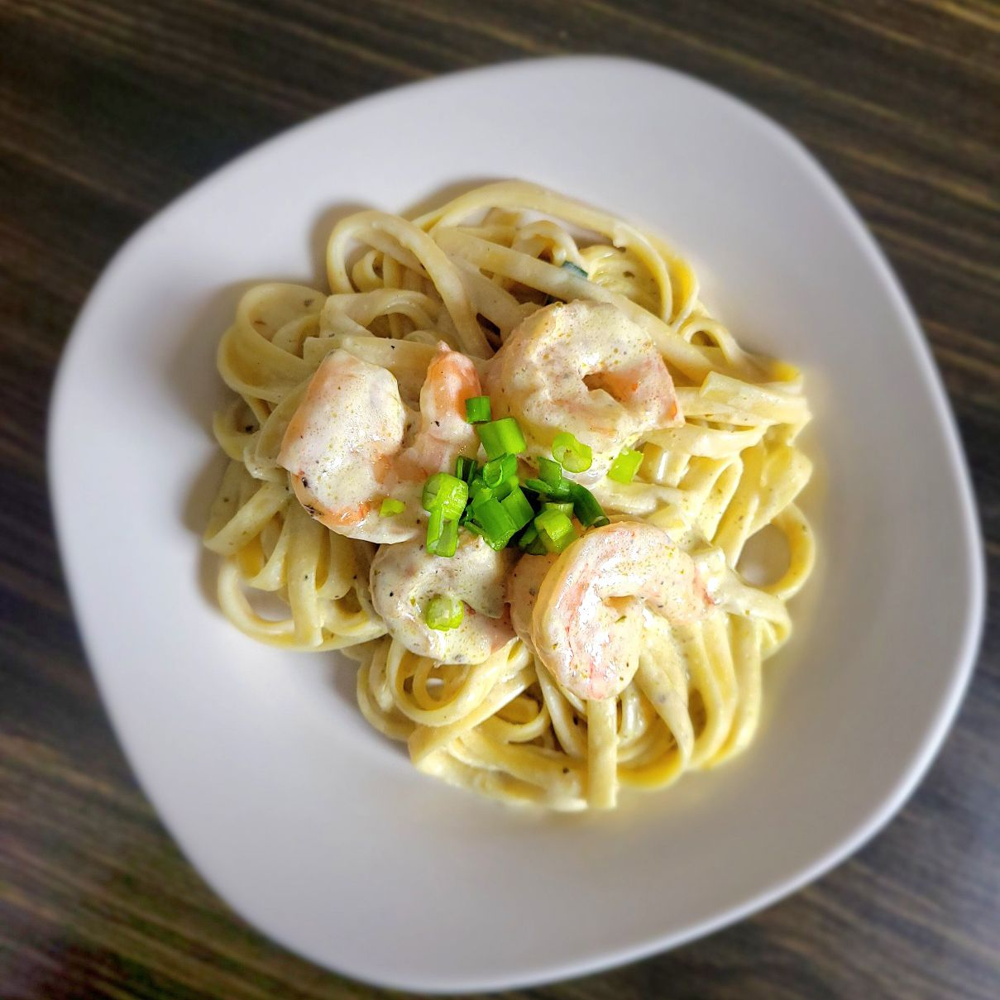

Fettucine Alfredo

Description:
A quick, easy, and delicious recipe for shrimp fettucine alfredo. Takes about 10 minutes to prep and about 15
minutes to cook.
Serves 6.
Ingredients:
1 (16 ounce) box of dry fettucine pasta
1/2 cup butter, divided
1 pound uncooked medium shrimp, peeled and deveined
4 cloves garlic, minced
1 (8 ounce) package cream cheese
2 teaspoons garlic powder
2 cups milk
1 (8 ounce) package grated Parmesan cheese
1 pinch ground black pepper
1 (3.5 ounce) jar prepared basil pesto
Steps:
- Fill a large pot with lightly salted water and bring to a rolling boil. Cook
fettucine at a boil until tender yet firm to the bite, about 8 minutes.
- Meanwhile, melt 1 tablespoon butter in a deep skillet over medium heat. Add shrimp
and garlic; cook and stir until shrimp turn pink, 2 to 3 minutes. Add remaining butter to the skillet and
let melt. Stir in cream cheese and garlic powder until smooth, about 2 minutes. Stir in milk and Parmesan
cheese until cheese is melted and sauce is smooth, about 2 minutes more. Season with pepper.
- Fold pesto into the cream sauce. Drain fettuccine and toss with sauce.